人工智能学习笔记七——基于BiLstm的恶意url检测
本文将用BiLstm模型，对于恶意的url访问进行检测，从而保证网络空间的安全。
首先在介绍BiLstm模型之前，先介绍一下Lstm长短期记忆神经网络模型。
长短时记忆网络长短时记忆网络（Long Short-Term
Memory Network，简称 LSTM）是循环神经网络模型（Recurrent Neural Network，简称 RNN）的一个重要分支，具有 RNN 的优点并在其基础上进行改善。早期的 DFN、CNN、BP 等深度学习网络的输出都只考虑前一个输入的影响，而不考虑其它时刻输入的影响，对于简单的非时间序列和图像的分析有较好的效果，比如单个词语感情分类、乳腺癌检测等。但是，对于一些与时间先后有关的，比如本文研究的连续时间下一个拼音转化等等，只考虑前一时刻输入的网络模型预测表现不佳。在DFN、CNN等简单的多层神经网络中，隐藏层之间各个节点分开工作、互不相关。而在 RNN 中，隐藏层各个节点之间会互相影响，各神经单元之间形成连接，呈现出动态时间序列行为。
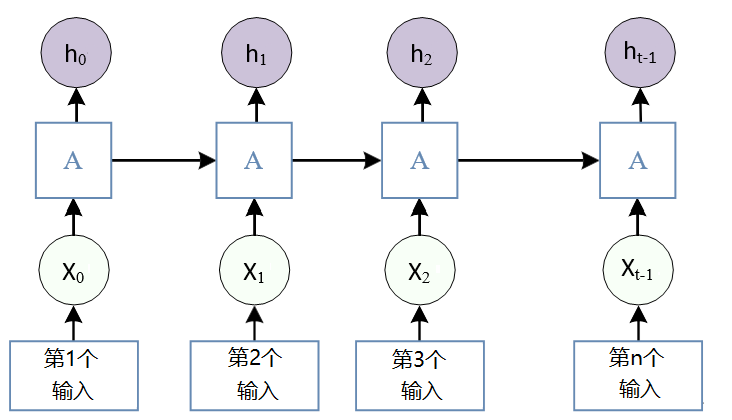
图1
RNN循环神经网络示意图
如图1所示，可以把一句句子当中的每一个元素依次输入到RNN网络当中，xi为第i个元素的输入，hi为对应位置的隐藏状态，而ℎ𝑡与𝑥𝑡为序列中最后一个单元，y为模型输出。图中第 i 层的隐藏状态 h，包含前 i 个输入所提供的信息，就是 RNN 网络具有记忆力的原因，其中ℎ𝑖由 i 时刻的输入𝑥𝑖与上一时刻的隐藏状态ℎ𝑖−1通过计算得到，可以发现 RNN 网络最终的隐藏状态中将包含对整个输入序列信息的抽象化表示。ℎ𝑖和 y 的计算方式分别如下：
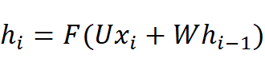
其中：ℎ𝑖为𝑖时刻的隐藏层状态；𝐹为激活函数；𝑈为权重矩阵；𝑥𝑖为𝑖时刻的输入；𝑊为权重矩阵；ℎ𝑖−1为𝑖-1 时刻的隐藏层状态。
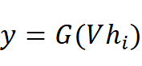
其中：𝑦为模型输出；𝐺为激活函数；𝑉为权重矩阵；ℎi为第 i 时刻的隐藏层状态。
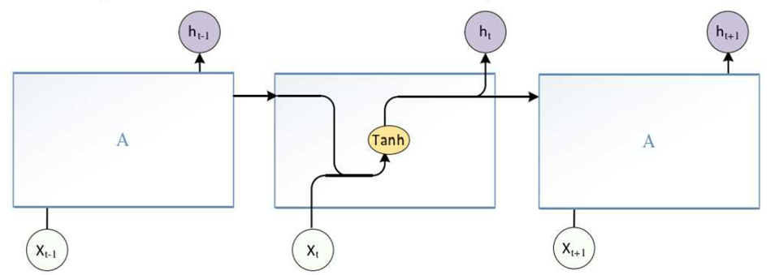
图2 RNN最小单元模型
循环神经网络 RNN理论上可以处理任意长度的时间序列，但实际上，标准 RNN 模型在处理时间跨度较长的时序过程中，随着模型信息传递，最早的信息会失去效力，RNN无法建立远程结构连接，存在梯度消失或称梯度爆炸问题，可以通过设置超参数、修改激活函数、Dropout剪枝等方式改善。但，这些方法无法从根本上解决 RNN 梯度消失问题因而精度提升效果较差，为解决时序长时依赖性问题，长短时记忆网络 LSTM 被提出。
LSTM 神经元结构如图3 所示。其中𝑥𝑡为 t 时刻输入，ℎ𝑡为 t 时刻隐藏层状态，𝐶𝑡为 t 时刻单元内部状态，𝜎与 tanh 为激活函数。
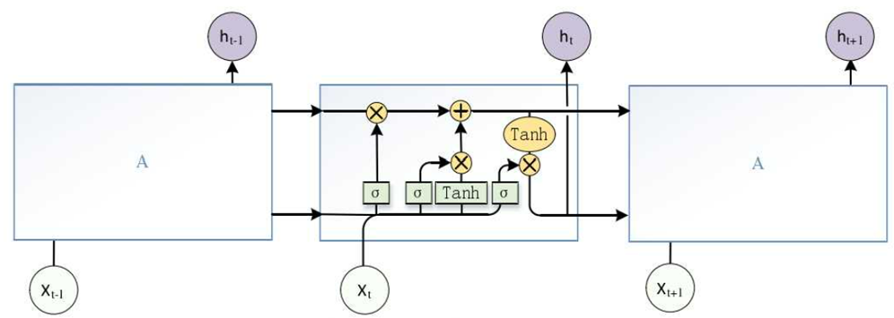
图3 LSTM最小模型单元
LSTM 与 RNN 一样，也是通过内部状态的传递来发掘序列元素间的依赖关系。LSTM 为了解决 RNN 梯度更新上的缺陷，引入了门控机制，门控由激活函数神经层和逐点乘法运算组成，可以有选择的让信息通过。LSTM 的门控环节分为遗忘、输入、输出三部分并且引入了一个状态单元协调整个网络的运作。
（1） 遗忘门
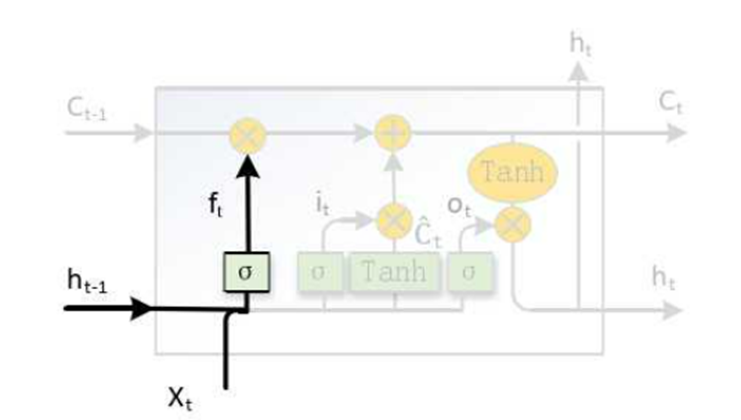
图4 LSTM遗忘门
LSTM 遗忘门如图4所示，遗忘门的作用是来决定对上一时刻传入信息的保留程度。遗忘门𝑓𝑡是将𝑡时刻的输入𝑥𝑡与𝑡 − 1时刻隐藏层输出ℎ𝑡−1通过线性变换，再施加激活函数𝜎得到的，计算方法如下。
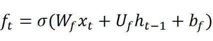
其中：𝑓𝑡为遗忘门；𝜎为激活函数；𝑊𝑓为遗忘门参数；𝑥𝑡为𝑡时刻的输入；𝑈𝑓为遗忘门参数；ℎ𝑡−1为𝑡 − 1时刻隐藏层输出；𝑏𝑓为遗忘门参数。
（2） 输入门
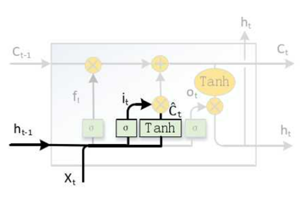
图5 LSTM输入门
LSTM 输入门如图5所示，输入门的工作主要决定𝑡时刻输入信息的保留程度。输入门 𝑖𝑡的计算方式与遗忘门𝑓𝑡相似，如下式所示。
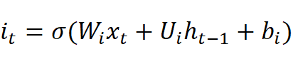
其中：𝑖𝑡为输入门；𝜎为激活函数；𝑊𝑖为输入门参数；𝑥𝑡为𝑡时刻的输入；𝑈𝑖为输入门参数；ℎ𝑡−1为𝑡 − 1时刻隐藏层输出；𝑏𝑖为输入门参数。𝐶̃𝑡用来描述𝑡时刻输入状态，由𝑡 − 1时刻隐藏层输出ℎ𝑡−1与t时刻的输入𝑥𝑡 ,经由线性变换再施加tanh求得，如下式所示，𝐶̃𝑡相当于将输入𝑥𝑡，𝑡 − 1时刻隐藏层状态ℎ𝑡−1所包含的状态信息进行了整合，形成了一个新的状态量。
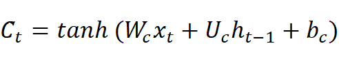
其中：𝐶̃𝑡为𝑡时刻输入状态；tanh 为激活函数；𝑊𝑐为输入状态参数；𝑥𝑡为t时刻的输入； 𝑈𝑐为输入状态参数；ℎ𝑡−1为𝑡 − 1时刻隐藏层状态𝑏𝑐为输入状态参数。
（3） 单元状态
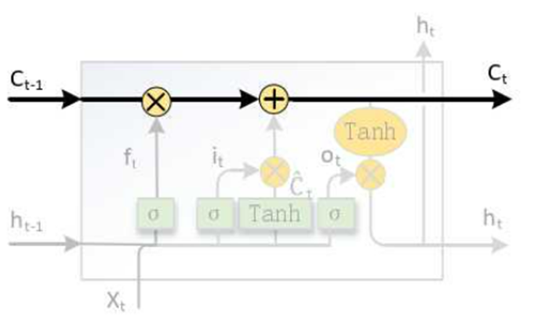
图6 LSTM单元状态
LSTM 的单元状态，如图6所示。单元状态是贯穿整个 LSTM 网络的信息传送带，让文本信息以不变的方向流动。
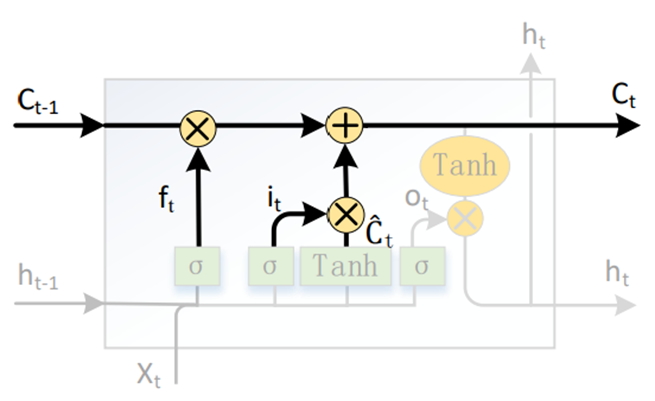
图7 LSTM单元状态更新
状态单元更新如图6 所示，其主要作用是更新LSTM 的内部状态，将上一时刻的内部状态𝐶𝑡−1更新为该时刻的内部状态𝐶𝑡。𝐶𝑡的计算公式如下式所示，首先通过𝐶𝑡−1 ⋅ 𝑓𝑡的方式来决定𝑡−1时刻信息的保留度，然后将保留下来的信息𝐶̃ 𝑡 ⋅ 𝑖𝑡与该时刻状态信息相加，计算出𝑡时刻的输出𝐶𝑡。
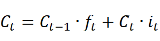
其中：𝐶𝑡为𝑡时刻内部状态；𝐶𝑡−1为𝑡 − 1时刻内部状态；𝑓𝑡为遗忘门；𝐶̃𝑡为𝑡时刻输入状态；𝑖𝑡为输入门。
（4） 输出门
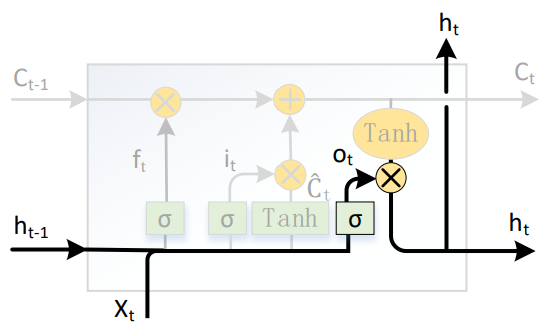
图8 LSTM输出门
LSTM 输出门如图8 所示，输出门控制𝑡时刻的输出取决于状态单元𝐶𝑡的程度。输出门 𝑜𝑡方式也与𝑓𝑡、𝑖𝑡类似，如下式所示。
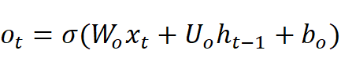
其中：𝑜𝑡为输出门；𝜎为激活函数；𝑊𝑜为输出门参数；𝑥𝑡为𝑡时刻的输入；𝑈𝑜为输出门参数；ℎ𝑡−1为𝑡 − 1时刻隐藏层输出；𝑏𝑜为输出门参数。最终 t 时刻的隐藏状态输出ht，是由𝑡时刻的内部状态𝐶𝑡与输出门𝑜𝑡共同决定，其计算公式如下式所示。
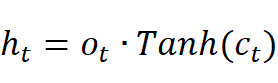
其中：ht为𝑡时刻隐藏层输出；ot为输出门；Tanh为激活函数；ct为𝑡时刻内部状态
但在标准的 LSTM中，单元状态的传输是从前往后单向的，所以 LSTM模型只能学习过去时刻的文本特征而无法学习未来时刻的文本特征。而双向长短期记忆网络（Bidirectional Long Short-Term Memory，简称
BiLSTM）有两条单元状态传送带，分别传递从前往后和从后往前的信息，使得 BiLSTM 模型能够在利用过去时刻的文本数据信息的同时，能够学习未来时刻文本信息的特征，并对其进行递归和反馈，预测结果比单向 LSTM 更加准确，挖掘时间序列过去和未来数据的联系，提高数据利用率更好利用时序的时间特征，以提高模型预测准确度。 BiLSTM 网络结构如图9 所示，BiLSTM
网络是正向和反向结合的双向循环结构，可以更好的挖掘时序数据的关联特征。
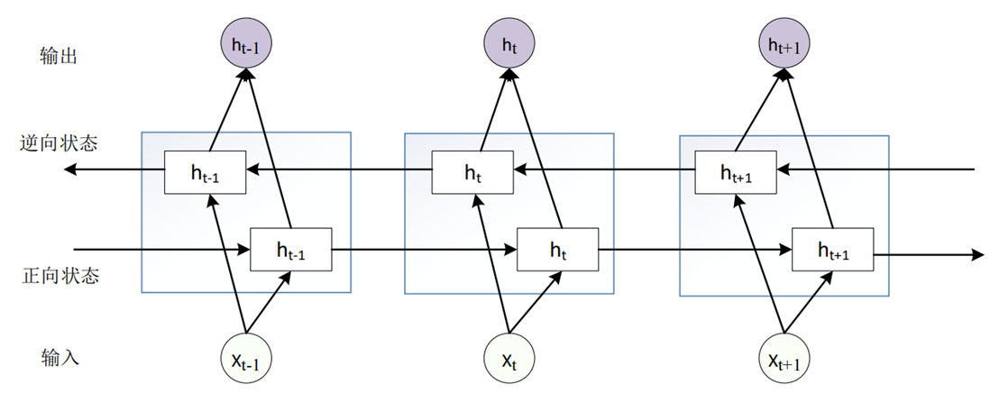
图9 BiLSTM网络结构
假设为𝑡时刻正向 LSTM 网络的隐藏层状态，其计算公式如下所示。可以看作是单层的 LSTM 网络，由𝑡 − 1时刻状态 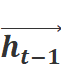
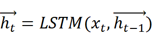
其中：为𝑡时刻正向 LSTM 网络的隐藏层状态；LSTM 为LSTM 单元；𝑥𝑡为𝑡时刻的输入； 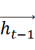
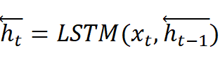
其中：为𝑡时刻正向 LSTM 网络的隐藏层状态；LSTM 为LSTM 单元；𝑥𝑡为𝑡时刻的输入； 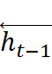
接下来介绍一下数据集，数据集摘自mirrors
/ Echo-Ws / UrlDetect · GitCode，正例是某网站服务器上一天正常的访问url，负例是收集了网上以及其他github仓库的大佬提供的数据，包括了网络攻击中常见的sql注入攻击，xss攻击等。在这里，笔者只用到了badqueries.txt做为负例，good_fromE2.txt做为正例。
有了训练数据集，首先需要进行数据清洗，观察了一下badqueries.txt这个数据集，发现其中一些数据甚至都不是url链接，因而需要剔除掉。接着，就是分割数据，我们使用jieba分词，将每个url请求分割成元素数组，便于后续的训练。代码如下：
import jieba
fr = open("badqueries.txt",encoding="utf-8")
databad=[]
for i in fr.readlines():
if i[0]=="/" and i[-1]!="/":
databad.append(list(jieba.cut(i)))
fr.close()
datagood=[]
fr = open("good_fromE2.txt",encoding="utf-8")
for i in fr.readlines():
if i[0]=="/" and i[-1]!="/":
datagood.append(list(jieba.cut(i)))
fr.close()
#print(len(datagood))#21911
#print(len(databad))#32014
发现正例一共有21911条数据，负例一共有32014条数据。
由于计算机只能对于数字进行计算，不能对字符运算，因而接下来需要给数据里的每个元素添加一个标签，将所有元素转化成数字。但又由于数据集的数字过多，元素的数量过于庞大，如果每一个元素都标注标签，反而会加大计算机的运算量。
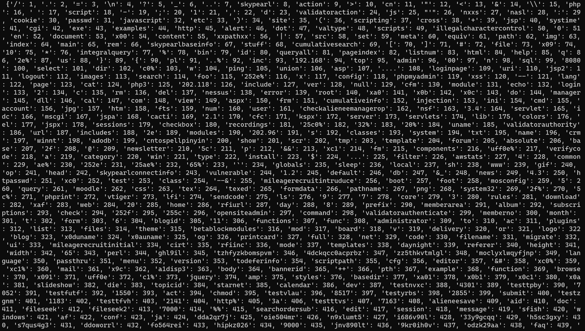
图9 元素标签标注图
图9是按照元素出现次数排列过后的标签标注图，由图可知，里面有不少的元素是数据集的提供者自定义的名称，并没有实际含义，所以需要删掉，因而这边标注标签的分词器只选取了出现频率次数最高的800个元素进行标签，其余的数据大概率为自定义的名称，因而进行剔除操作。代码如下：
from keras.preprocessing.text import Tokenizer
numchar=800
tokenizer_str = Tokenizer(num_words=numchar)
tokenizer_str.fit_on_texts(databad+datagood)
#print("word_index: \n",tokenizer_str.word_index)
接着对数据进行对齐操作，笔者把所有超过30元素的数据删除掉，所有不到30个元素的数据进行补零操作，这样确保所有的数据都是30长度的，从而确保能够代入模型当中进行训练。然后制作输出样本，规定正例的输出为1，负例的输出为0，代码如下：
from keras_preprocessing.sequence import pad_sequences
import numpy as np
datagood_ls=[]
databad_ls=[]
length = 30#对长度超过30的数组进行删除
for i in datagood:
if len(i)<length:
out = tokenizer_str.texts_to_sequences([i])
datagood_ls.append(out[0])
for i in databad:
if len(i)<length:
out = tokenizer_str.texts_to_sequences([i])
databad_ls.append(out[0])
dataall = datagood_ls + databad_ls
dataout = [1]*len(datagood_ls) + [0]*len(databad_ls)
# 把样本都 pad 到 30 个词，转化成 numpy 数组
data_all_mat = pad_sequences(dataall, maxlen=length, padding='post')
dataout = np.array(dataout)
#print(len(data_all_mat))#47458
#print(len(dataout))
接着就可以训练了，这边先将输入数据进行word
embedding操作，将数据变成256维的数组，然后搭建3层BiLstm模型，对最后一层模型的输出进行sigmoid操作，如图10所示。
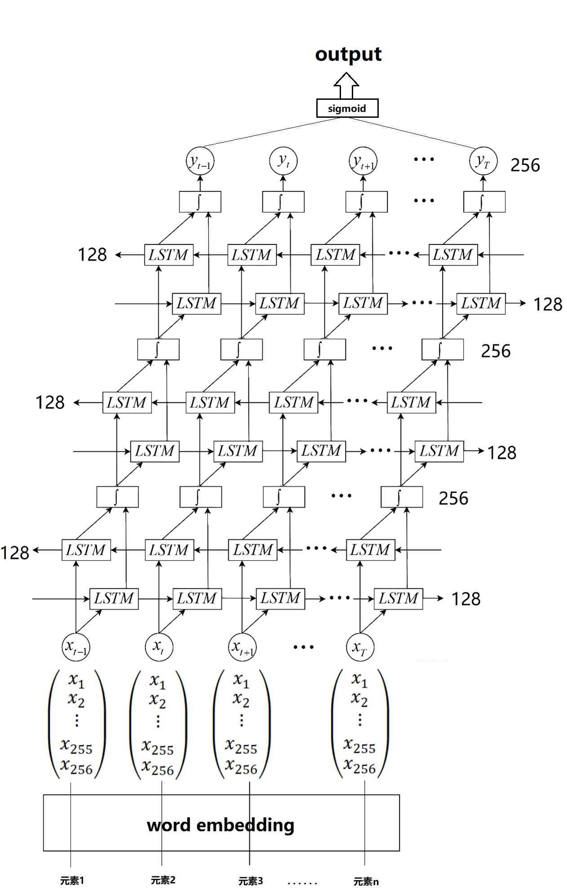
图10 网络示意图
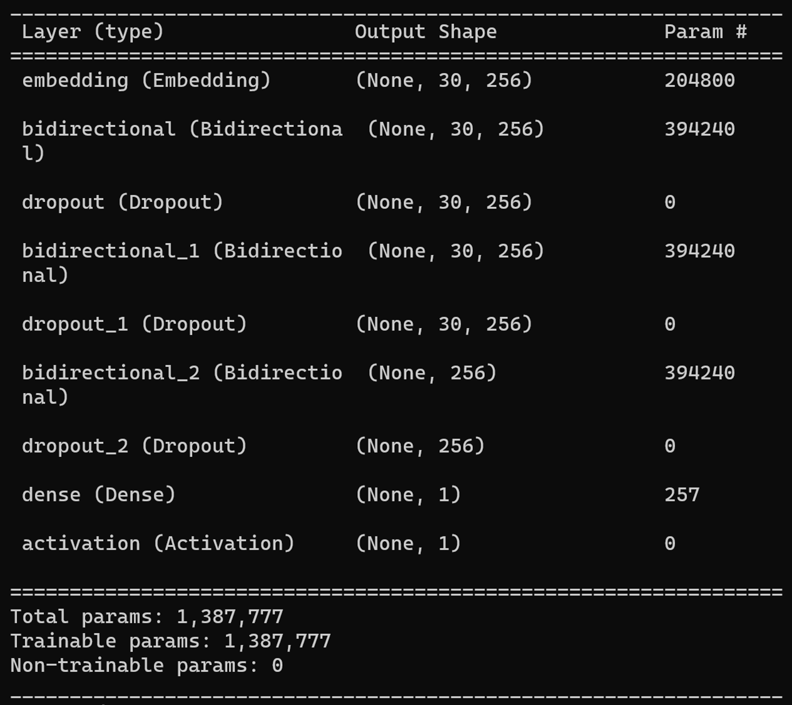
图11 网络示意图
训练代码如下：
from keras import Sequential
from keras.layers import Embedding
from keras.models import Model,load_model
from keras.layers import Conv2D, MaxPooling2D, Dropout, Activation, Flatten, Dense,BatchNormalization,LSTM,Bidirectional
import pickle
import matplotlib.pyplot as plt
from sklearn.model_selection import train_test_split
data_train, data_test, dataout_train, dataout_test = train_test_split(data_all_mat, dataout, test_size=0.3, random_state=42, shuffle=True)
model = Sequential()
model.add(Embedding(numchar, 256, input_length=length))
model.add(Bidirectional(LSTM(128, return_sequences=True)))
model.add(Dropout(0.5))
model.add(Bidirectional(LSTM(128, return_sequences=True)))
model.add(Dropout(0.5))
model.add(Bidirectional(LSTM(128, return_sequences=False)))
model.add(Dropout(0.5))
model.add(Dense(1))
model.add(Activation('sigmoid'))
model.compile(loss='binary_crossentropy', optimizer='adam', metrics=['accuracy'])
model.summary()
history = model.fit(data_train,dataout_train, epochs=5, batch_size=128, validation_data=(data_test, dataout_test),verbose=2)
# 保存模型
model.save('all.h5')
# 保存分词器
with open('dataall.pickle', 'wb') as handle:
pickle.dump(tokenizer_str, handle, protocol=pickle.HIGHEST_PROTOCOL)
plt.figure()
plt.subplot(1,2,1)
plt.plot(history.history['accuracy'])
plt.plot(history.history['val_accuracy'])
plt.title('Model accuracy')
plt.ylabel('Accuracy')
plt.xlabel('Epoch')
plt.legend(['Train', 'Test'], loc='upper left')
# 绘制训练 & 验证的损失值
plt.subplot(1,2,2)
plt.plot(history.history['loss'])
plt.plot(history.history['val_loss'])
plt.title('Model loss')
plt.ylabel('Loss')
plt.xlabel('Epoch')
plt.legend(['Train', 'Test'], loc='upper left')
plt.show()
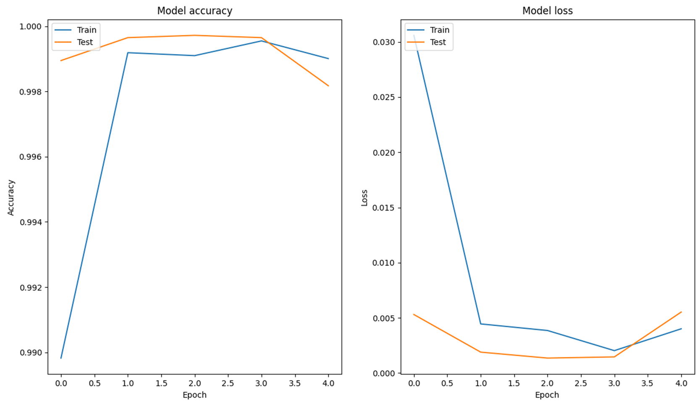
图12 训练过程图
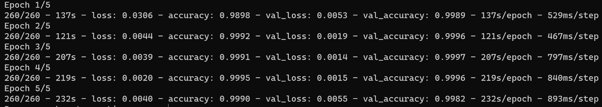
图13 训练过程图
为了展示一下模型的效果，笔者这边选了自定义的2个正例，6个负例的url输入到模型进行预测，正例分别是笔者个人的网站链接和上海理工大学的校园网主页链接，负例是ctf中关于网络攻击的题型的恶意url攻击。代码如下：
import pickle
from keras.models import Model,load_model
import jieba
from keras_preprocessing.sequence import pad_sequences
with open('dataall.pickle', 'rb') as f:
tokenizer_string = pickle.load(f)
model=load_model("all.h5")
length=30
test_string_set=["https://www.usst.edu.cn/main.htm",
"https://caodong0225.github.io/index1.html",
"http://challenge-f116bd91836c903a.sandbox.ctfhub.com:10800/www.zip",
"http://challenge-405b4e1c032f6e09.sandbox.ctfhub.com:10800/?id=-1+union+select+1%2C%28select+flag+from+sqli.flag+limit+0%2C1%29",
"http://8ec64a9a-35a9-4d04-9919-ca514a9ff904.node4.buuoj.cn:81/level2?username=<script>alert('xss')</script>",
"http://challenge-73c6b2c2f2993e54.sandbox.ctfhub.com:10800/?url=http://127.0.0.1/flag.php",
"http://challenge-be3e0224b7f532fa.sandbox.ctfhub.com:10800/?url=file:///var/www/html/flag.php",
"http://challenge-1511574cb1da7fe5.sandbox.ctfhub.com:10800/?url=http://notfound.ctfhub.com@127.0.0.1/flag.php"]
for test_string in test_string_set:
test_string_token = tokenizer_string.texts_to_sequences([list(jieba.cut(test_string))])
test_string_mat = pad_sequences(test_string_token, maxlen=length, padding='post')
print(test_string)
print(model.predict(test_string_mat,verbose=0))
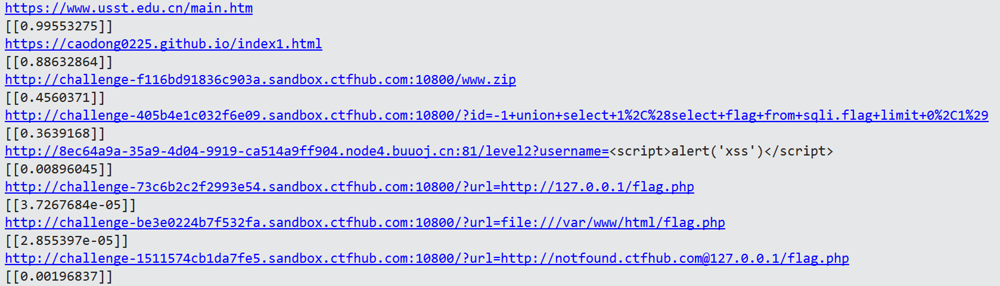
图14 预测输出图
可以看到，结果还是非常可观的。